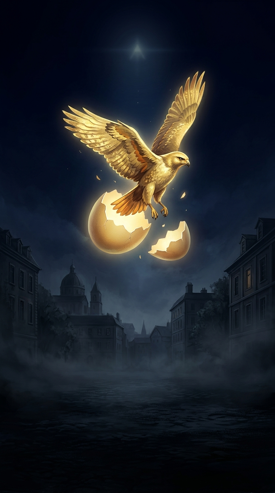

←
데미안
· 헤르만 헤세
AI 웹툰

데미안
— 에밀 싱클레어의 젊은 날 —
원작 헤르만 헤세 · bookstar AI 웹툰
아래로 스크롤 ↓
끝
알을 깨고 나온 새는 신을 향해 날아올랐다. 두 세계의 경계에서 떨던 소년은, 마침내 제 안의 어둠과 빛을 모두 끌어안고 자기 자신에게 이르렀다.
📖 원작 전문 읽기
북스타 홈
원작은 저작권 만료(PD) 작품입니다. 그림은 bookstar AI(Nano Banana)로 제작한 데모 작화입니다.